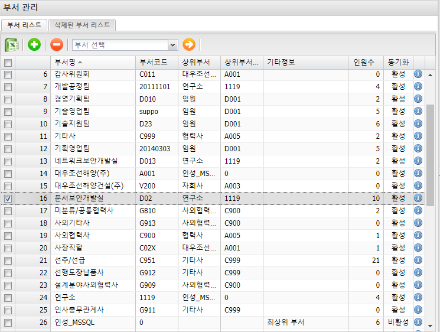
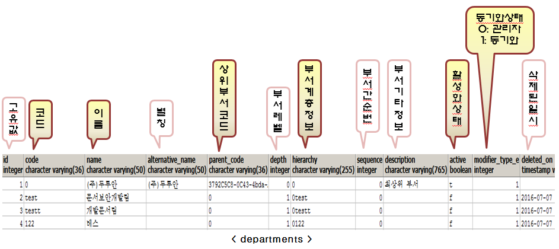
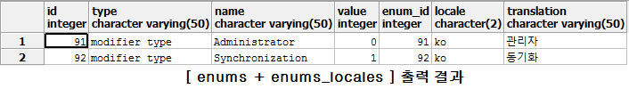

부서 관리 (departments)

※ 테이블 설명

column 설명
-
sequence: 만약 동일한 이름의 부서가 동일한 상위 부서를 가지고 있을 시, sequence 값에 따라 sorting 되는 값
-
modifier_type_e: 동기화 여부를 나타내며, 그 값이 1인 경우 그룹웨어에서 변경되면 departments 의 값도 변경됨
column 맨 끝에 _e 가 붙어있다면 enums 테이블의 값을 확인해 보자.
-
_e 는 다른 테이블에서도 동일하게 나타나며, 모두 enums 테이블을 참고한다.
SELECT *
FROM enums
INNER JOIN enums_locales ON enums.id = enums_locales.enum_id
where type = 'modifier_type'

이전